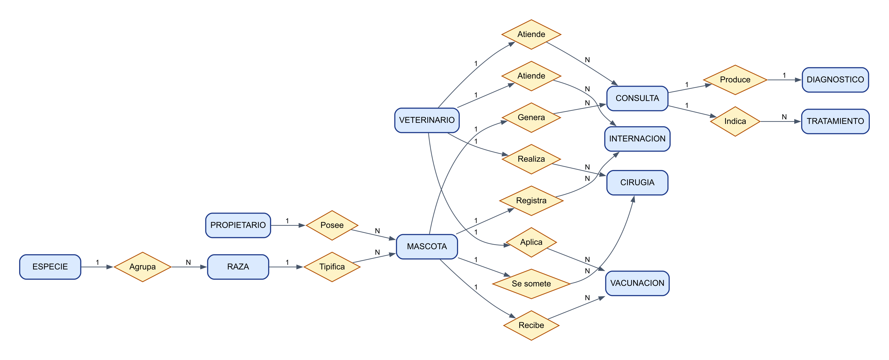
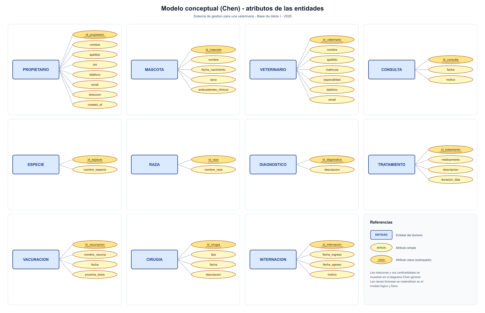
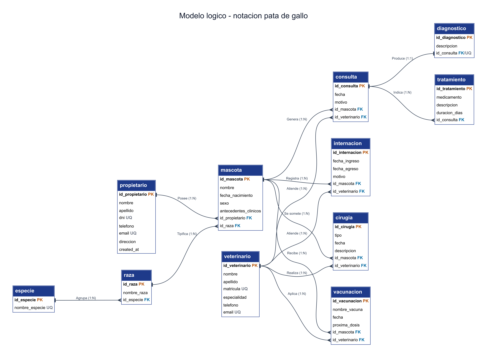
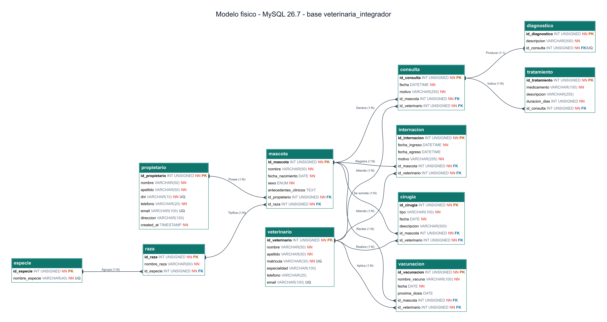

| Carrera | Tecnicatura Superior en Desarrollo de Software |
| Espacio curricular | Base de Datos I |
| Docente | Juan Caballero Gallar |
| Ciclo lectivo | 2026 |
| Entrega | 28 de octubre de 2026 |
| Motor de base de datos | MySQL 26.7 · InnoDB · utf8mb4 |
| Repositorio | github.com/NeruTrash/base-datos-integrador-veterinaria |
El presente trabajo integra los contenidos de las Unidades I a IV de Base de Datos I en el diseño y la implementación de un sistema de gestión para una veterinaria. El dominio cubre la administración de propietarios, mascotas, profesionales, consultas, diagnósticos, tratamientos, vacunaciones, cirugías e internaciones, con trazabilidad del historial clínico de cada paciente.
El objetivo general es diseñar, normalizar e implementar una base de datos relacional en MySQL que soporte la operación de la veterinaria, junto con una capa de acceso programático en Python mediante el ORM peewee, aplicando DDL, DCL, DML, transacciones, vistas y control de permisos por rol.
Los objetivos específicos son:
| Campo | Detalle |
|---|---|
| Carrera | Tecnicatura Superior en Desarrollo de Software |
| Espacio curricular | Base de Datos I |
| Docente | Juan Caballero Gallar |
| Ciclo lectivo | 2026 |
| Integrantes | Máximo Aceituno · Federico Calafiore |
| Fecha de entrega | 28 de octubre de 2026 |
| Motor | MySQL Community Server 26.7 (InnoDB, utf8mb4) |
| Base de datos | veterinaria_integrador |
El alcance funcional comprende once tablas, cinco vistas, cinco usuarios de base de datos y un CRUD
programático sobre las tablas propietario y mascota. Quedan fuera del alcance
la facturación, la gestión de stock, la asignación de turnos y una interfaz web; se mencionan en la
retrospectiva como líneas de trabajo futuro.
Los artefactos entregados son el script SQL (810 líneas), la aplicación Python (497
líneas), los cuatro diagramas en img/, este informe en PDF y el repositorio público con
todo el código versionado.
La elección de las herramientas prioriza tres criterios: que el motor cumpla con las exigencias de la cátedra, que la capa de acceso sea liviana y legible, y que los diagramas puedan regenerarse a partir de una fuente reproducible en lugar de editarse a mano.
| Capa | Tecnología | Versión | Uso en el proyecto |
|---|---|---|---|
| Motor de base de datos | MySQL Community Server | 26.7.0 | DDL, DML, DCL, vistas, triggers y transacciones InnoDB. |
| Cliente SQL | MySQL Workbench | 8.0 CE | Ejecución, exploración y verificación de scripts. |
| Lenguaje | Python | 3.12 | Capa de acceso y CRUD. |
| ORM | peewee | 3.17+ | Modelos, consultas y transacciones atómicas. |
| Driver | PyMySQL | 1.1+ | Conector Python–MySQL. |
| Cifrado | cryptography | 42+ | Soporte de caching_sha2_password. |
| Diagramas | Graphviz + @viz-js/viz + Sharp | 14 / 0.34 | Generación de Chen, pata de gallo y EER. |
| Documento | HTML5 + CSS3 + Microsoft Edge | — | Maquetación e impresión a PDF. |
| Versionado | Git + GitHub | — | Repositorio público y control de cambios. |
MySQL es el motor requerido por la cátedra y ofrece las garantías necesarias para el
dominio: transacciones ACID, claves foráneas, restricciones CHECK, vistas, triggers y un sistema de
privilegios granular. El motor InnoDB permite además definir reglas de borrado diferenciadas
(RESTRICT y CASCADE) según la naturaleza del dato.
Python con peewee permite construir un CRUD conciso sin perder control sobre el SQL
generado. peewee ofrece db.atomic() para agrupar operaciones en una transacción, lo que
resulta ideal para el alta y la baja coordinada de propietario y mascota. PyMySQL es un
driver puro Python, sin dependencias nativas, y cryptography es necesario para autenticarse
contra MySQL 8.0 o superior cuando el usuario utiliza el plugin caching_sha2_password.
Graphviz se utilizó para generar los diagramas desde definiciones textuales, de modo que cualquier cambio en el modelo pueda reflejarse regenerando la imagen. La documentación se maquetó en HTML y se imprimió a PDF con Edge en modo headless, lo que permite mantener el documento dentro del mismo repositorio y repetir la compilación cuando sea necesario.
Esta sección documenta el pasaje del relevamiento al modelo implementado: primero los requerimientos y las reglas del negocio, luego el modelo conceptual, después el modelo lógico y finalmente el modelo físico con las decisiones propias de MySQL.
| ID | Requerimiento | Descripción |
|---|---|---|
| RF-01 | Gestionar propietarios | Alta, baja, modificación y consulta de los dueños de mascotas. |
| RF-02 | Gestionar mascotas | Alta, baja, modificación y consulta de mascotas, vinculadas a un propietario y a una raza. |
| RF-03 | Administrar catálogos | Mantener las especies y las razas disponibles. |
| RF-04 | Registrar consultas | Registrar fecha, motivo, mascota y veterinario de cada atención. |
| RF-05 | Registrar diagnósticos | Asociar un diagnóstico a una consulta (como máximo uno). |
| RF-06 | Registrar tratamientos | Cargar uno o más tratamientos por consulta, con duración. |
| RF-07 | Registrar vacunaciones | Registrar vacuna, fecha de aplicación y próxima dosis. |
| RF-08 | Registrar cirugías | Registrar tipo, fecha, descripción, mascota y cirujano. |
| RF-09 | Registrar internaciones | Registrar ingreso, egreso, motivo y profesional responsable. |
| RF-10 | Consultar información | Obtener fichas, historial clínico, vacunas pendientes y resumen por veterinario. |
| RF-11 | Administrar accesos | Crear usuarios y asignar permisos según el rol. |
| ID | Regla de negocio | Implementación |
|---|---|---|
| RN-01 | Un propietario puede tener cero o muchas mascotas; cada mascota pertenece a un solo propietario. | FK mascota.id_propietario (1:N). |
| RN-02 | Cada mascota tiene una raza y cada raza pertenece a una especie. | FK mascota.id_raza y raza.id_especie. |
| RN-03 | La especie de una mascota se deriva de su raza; no se almacena dos veces. | Se eliminó id_especie de mascota. |
| RN-04 | Una consulta puede tener cero o un diagnóstico y cero o muchos tratamientos. | UNIQUE en diagnostico.id_consulta; FK 1:N en tratamiento. |
| RN-05 | No se puede eliminar un propietario con mascotas ni una mascota con historia clínica. | ON DELETE RESTRICT. |
| RN-06 | Al eliminar una consulta se eliminan su diagnóstico y sus tratamientos. | ON DELETE CASCADE en las dos tablas dependientes. |
| RN-07 | La fecha de nacimiento no puede ser futura. | Trigger trg_mascota_fecha_nac_bi/bu. |
| RN-08 | La próxima dosis debe ser posterior a la aplicación y el egreso no puede ser anterior al ingreso. | Restricciones CHECK. |
| RN-09 | La duración de un tratamiento debe ser mayor que cero. | CHECK (duracion_dias > 0). |
| RN-10 | DNI, email del propietario, matrícula y email del veterinario son únicos. | Restricciones UNIQUE. |
El modelo conceptual identifica once entidades y trece relaciones. Las entidades MASCOTA y
VETERINARIO actúan como ejes: la primera concentra la historia del paciente y el segundo
concentra la actividad profesional. La figura siguiente muestra las entidades, las relaciones y las
cardinalidades; la segunda figura detalla los atributos de cada entidad.

Los atributos clave se representan subrayados. En el modelo conceptual no se incluyen las claves foráneas, porque las relaciones ya expresan la asociación entre entidades; las claves foráneas se materializan recién en los modelos lógico y físico.

| Entidad | Relación | Entidad | Cardinalidad |
|---|---|---|---|
| PROPIETARIO | Posee | MASCOTA | 1 : N |
| ESPECIE | Agrupa | RAZA | 1 : N |
| RAZA | Tipifica | MASCOTA | 1 : N |
| MASCOTA | Genera | CONSULTA | 1 : N |
| VETERINARIO | Atiende | CONSULTA | 1 : N |
| CONSULTA | Produce | DIAGNOSTICO | 1 : 1 |
| CONSULTA | Indica | TRATAMIENTO | 1 : N |
| MASCOTA | Recibe | VACUNACION | 1 : N |
| VETERINARIO | Aplica | VACUNACION | 1 : N |
| MASCOTA | Se somete | CIRUGIA | 1 : N |
| VETERINARIO | Realiza | CIRUGIA | 1 : N |
| MASCOTA | Registra | INTERNACION | 1 : N |
| VETERINARIO | Atiende | INTERNACION | 1 : N |
El pasaje al modelo lógico introduce las claves primarias sustitutas, las claves foráneas y las reglas
de integridad referencial. Se utilizaron claves INT UNSIGNED AUTO_INCREMENT por su
eficiencia en índices y porque desacoplan la identidad interna de los datos de negocio, como el DNI o
la matrícula, que igualmente conservan su restricción de unicidad.

| Tabla hija | Campo | Tabla padre | Cardinalidad | ON DELETE |
|---|---|---|---|---|
| mascota | id_propietario | propietario | 1 : N | RESTRICT |
| raza | id_especie | especie | 1 : N | RESTRICT |
| mascota | id_raza | raza | 1 : N | RESTRICT |
| consulta | id_mascota | mascota | 1 : N | RESTRICT |
| consulta | id_veterinario | veterinario | 1 : N | RESTRICT |
| diagnostico | id_consulta | consulta | 1 : 1 | CASCADE |
| tratamiento | id_consulta | consulta | 1 : N | CASCADE |
| vacunacion | id_mascota | mascota | 1 : N | RESTRICT |
| vacunacion | id_veterinario | veterinario | 1 : N | RESTRICT |
| cirugia | id_mascota | mascota | 1 : N | RESTRICT |
| cirugia | id_veterinario | veterinario | 1 : N | RESTRICT |
| internacion | id_mascota | mascota | 1 : N | RESTRICT |
| internacion | id_veterinario | veterinario | 1 : N | RESTRICT |
La relación 1:1 entre consulta y diagnostico se implementa con una clave
foránea que además es única (uq_diagnostico_consulta). De este modo, una consulta no puede
tener dos diagnósticos, pero puede no tener ninguno. Los tratamientos, en cambio, se mantienen en una
tabla separada porque una consulta puede indicar varios y porque cada uno tiene atributos propios
(medicamento, posología y duración).
Las reglas de borrado siguen un criterio clínico: los datos que forman parte de la historia del paciente
no se eliminan en cascada (RESTRICT), mientras que el diagnóstico y los tratamientos son
dependientes de la consulta y se eliminan con ella (CASCADE). Así se evita dejar registros
huérfanos y se protege la trazabilidad.
El esquema se normalizó hasta la Tercera Forma Normal. A continuación se justifica cada etapa con ejemplos concretos del dominio.
Todos los atributos son atómicos y no existen grupos repetidos. Un propietario tiene un solo teléfono
en la columna telefono; si en el futuro se necesitan varios, corresponde una tabla de
teléfonos y no una lista separada por comas. Del mismo modo, los tratamientos de una consulta no se
guardan como texto en consulta, sino como filas independientes en tratamiento.
Todos los atributos que no forman parte de la clave dependen de la clave completa. Como todas las tablas
utilizan una clave primaria simple y sustituta, la 2FN se cumple por construcción. En raza,
la unicidad compuesta (id_especie, nombre_raza) impide repetir la misma raza dentro de una
especie, pero nombre_raza depende funcionalmente de id_raza.
No existen dependencias transitivas. El caso más importante es la especie de la mascota: en una versión
previa, mascota contenía id_raza e id_especie. Como la especie se
deduce de la raza, mantener ambas columnas generaba una dependencia transitiva
(id_mascota → id_raza → id_especie) y el riesgo de inconsistencias. Se eliminó
id_especie de mascota y la especie se obtiene mediante
mascota → raza → especie.
El mismo criterio se aplicó a los datos del propietario (no se repiten en mascota), a los
datos del veterinario (no se repiten en consulta) y a los tratamientos (no se almacenan
como una lista dentro de la consulta). La edad de la mascota es un dato derivado: se calcula en la vista
v_ficha_mascota con TIMESTAMPDIFF y no se almacena.
| Situación inicial | Problema | Solución adoptada |
|---|---|---|
mascota con especie y raza | Dependencia transitiva y datos duplicados. | Catálogos especie y raza; la especie se deriva de la raza. |
Datos del dueño dentro de mascota | Duplicación y anomalías de actualización. | Tabla propietario y FK. |
Tratamientos como texto en consulta | Grupo repetido, incumple 1FN. | Tabla tratamiento con FK a la consulta. |
Diagnóstico dentro de consulta | Atributo opcional y dependiente. | Tabla diagnostico 1:1 con UNIQUE. |
| Edad almacenada | Dato derivado que se desactualiza. | Se calcula en la vista, no se almacena. |
El modelo físico refleja la implementación real en MySQL: tipos de datos, nulabilidad, claves, restricciones e índices. La figura siguiente se generó a partir de la misma definición que el script DDL, por lo que ambos artefactos se mantienen alineados.

| Decisión | Valor | Fundamento |
|---|---|---|
| Motor de almacenamiento | InnoDB | Transacciones ACID, claves foráneas y bloqueo a nivel de fila. |
| Juego de caracteres | utf8mb4 / utf8mb4_unicode_ci | Soporte completo de acentos, eñes y caracteres especiales. |
| Claves primarias | INT UNSIGNED AUTO_INCREMENT | Índices compactos y estabilidad de las referencias. |
| Dominio de sexo | ENUM('Macho','Hembra','Otro') | Restringe el dominio sin una tabla adicional. |
| Fechas de negocio | DATE / DATETIME | DATE para días; DATETIME para consultas e internaciones. |
| Restricciones de dominio | CHECK | Duración positiva, próxima dosis posterior y egreso no anterior al ingreso. |
| Validación temporal | Triggers BEFORE INSERT/UPDATE | MySQL no admite CURDATE() dentro de un CHECK. |
| Índices | FK, fechas y apellidos | Optimizan JOIN, búsquedas por rango y ordenamientos. |
| Borrado | RESTRICT / CASCADE | Protege la historia clínica y elimina solo datos dependientes. |
| Modo SQL | STRICT_TRANS_TABLES + ONLY_FULL_GROUP_BY | Evita truncamientos silenciosos y valida agregaciones. |
El diccionario describe cada tabla, sus columnas, tipos, nulabilidad, restricciones y propósito. Se incluyen además las vistas y los usuarios definidos en el script.
| Símbolo | Significado |
|---|---|
| PK | Clave primaria. |
| FK → tabla | Clave foránea hacia la tabla indicada. |
| UQ | Restricción de unicidad. |
| NN | Columna NOT NULL (se indica en la columna «Nulo» como «No»). |
| — | Sin restricción adicional. |
Los nombres de tablas y columnas se escriben en minúsculas y con guiones bajos. Las claves primarias
siguen el patrón id_<tabla> y las foráneas repiten el nombre de la clave referenciada.
Catálogo de las especies atendidas. Permite clasificar las razas y, a través de ellas, a las mascotas.
especie| Campo | Tipo | Nulo | Clave / restricción | Descripción |
|---|---|---|---|---|
| id_especie | INT UNSIGNED | No | PK AUTO_INCREMENT | Identificador interno de la especie. |
| nombre_especie | VARCHAR(40) | No | UQ | Nombre único de la especie (Perro, Gato, Conejo, Ave). |
Razas reconocidas para cada especie. La combinación especie + nombre de raza es única.
raza| Campo | Tipo | Nulo | Clave / restricción | Descripción |
|---|---|---|---|---|
| id_raza | INT UNSIGNED | No | PK AUTO_INCREMENT | Identificador interno de la raza. |
| nombre_raza | VARCHAR(60) | No | UQ compuesta | Nombre de la raza; único dentro de su especie. |
| id_especie | INT UNSIGNED | No | FK → especie | Especie a la que pertenece la raza. |
Personas responsables de las mascotas. Es la tabla maestra del CRUD implementado en Python.
propietario| Campo | Tipo | Nulo | Clave / restricción | Descripción |
|---|---|---|---|---|
| id_propietario | INT UNSIGNED | No | PK AUTO_INCREMENT | Identificador interno del propietario. |
| nombre | VARCHAR(50) | No | — | Nombre del propietario. |
| apellido | VARCHAR(50) | No | Índice | Apellido del propietario; indexado para búsquedas. |
| dni | VARCHAR(10) | No | UQ | Documento nacional de identidad; único. |
| telefono | VARCHAR(20) | No | — | Teléfono de contacto. |
| VARCHAR(100) | Sí | UQ | Correo electrónico; único y opcional. | |
| direccion | VARCHAR(150) | Sí | — | Domicilio declarado. |
| created_at | TIMESTAMP | No | DEFAULT CURRENT_TIMESTAMP | Fecha y hora de alta del registro. |
Pacientes del sistema. Cada mascota pertenece a un propietario y a una raza; la especie se obtiene desde la raza.
mascota| Campo | Tipo | Nulo | Clave / restricción | Descripción |
|---|---|---|---|---|
| id_mascota | INT UNSIGNED | No | PK AUTO_INCREMENT | Identificador interno de la mascota. |
| nombre | VARCHAR(50) | No | — | Nombre de la mascota. |
| fecha_nacimiento | DATE | No | Trigger de validación | Fecha de nacimiento; no puede ser futura. |
| sexo | ENUM('Macho','Hembra','Otro') | No | Dominio cerrado | Sexo del animal. |
| antecedentes_clinicos | TEXT | Sí | — | Alergias, cirugías previas y observaciones. |
| id_propietario | INT UNSIGNED | No | FK → propietario | Propietario responsable. |
| id_raza | INT UNSIGNED | No | FK → raza | Raza de la mascota. |
Profesionales que intervienen en consultas, vacunaciones, cirugías e internaciones.
veterinario| Campo | Tipo | Nulo | Clave / restricción | Descripción |
|---|---|---|---|---|
| id_veterinario | INT UNSIGNED | No | PK AUTO_INCREMENT | Identificador interno del profesional. |
| nombre | VARCHAR(50) | No | — | Nombre del profesional. |
| apellido | VARCHAR(50) | No | — | Apellido del profesional. |
| matricula | VARCHAR(30) | No | UQ | Matrícula profesional; única. |
| especialidad | VARCHAR(100) | Sí | — | Especialidad declarada. |
| telefono | VARCHAR(20) | Sí | — | Teléfono de contacto. |
| VARCHAR(100) | Sí | UQ | Correo electrónico; único y opcional. |
Atenciones clínicas realizadas a una mascota por un veterinario. Es el eje del historial clínico.
consulta| Campo | Tipo | Nulo | Clave / restricción | Descripción |
|---|---|---|---|---|
| id_consulta | INT UNSIGNED | No | PK AUTO_INCREMENT | Identificador interno de la consulta. |
| fecha | DATETIME | No | Índice | Fecha y hora de la atención. |
| motivo | VARCHAR(255) | No | — | Motivo expresado por el propietario. |
| id_mascota | INT UNSIGNED | No | FK → mascota | Paciente atendido. |
| id_veterinario | INT UNSIGNED | No | FK → veterinario | Profesional que realiza la atención. |
Resultado clínico de una consulta. La relación es 1:1: cada consulta tiene como máximo un diagnóstico.
diagnostico| Campo | Tipo | Nulo | Clave / restricción | Descripción |
|---|---|---|---|---|
| id_diagnostico | INT UNSIGNED | No | PK AUTO_INCREMENT | Identificador interno del diagnóstico. |
| descripcion | VARCHAR(500) | No | — | Diagnóstico o hallazgo clínico. |
| id_consulta | INT UNSIGNED | No | FK → consulta UQ | Consulta asociada; la restricción UNIQUE garantiza el 1:1. |
Indicaciones terapéuticas derivadas de una consulta. Una consulta puede generar varios tratamientos.
tratamiento| Campo | Tipo | Nulo | Clave / restricción | Descripción |
|---|---|---|---|---|
| id_tratamiento | INT UNSIGNED | No | PK AUTO_INCREMENT | Identificador interno del tratamiento. |
| medicamento | VARCHAR(100) | No | — | Medicamento o indicación principal. |
| descripcion | VARCHAR(255) | Sí | — | Posología y cuidados. |
| duracion_dias | INT UNSIGNED | No | CHECK > 0 | Duración en días; debe ser mayor que cero. |
| id_consulta | INT UNSIGNED | No | FK → consulta | Consulta que indica el tratamiento. |
Aplicaciones de vacunas y control de la próxima dosis. Vincula mascota y veterinario.
vacunacion| Campo | Tipo | Nulo | Clave / restricción | Descripción |
|---|---|---|---|---|
| id_vacunacion | INT UNSIGNED | No | PK AUTO_INCREMENT | Identificador interno de la vacunación. |
| nombre_vacuna | VARCHAR(100) | No | — | Nombre comercial o tipo de vacuna. |
| fecha | DATE | No | — | Fecha de aplicación. |
| proxima_dosis | DATE | Sí | CHECK > fecha | Fecha sugerida para la próxima dosis. |
| id_mascota | INT UNSIGNED | No | FK → mascota | Mascota vacunada. |
| id_veterinario | INT UNSIGNED | No | FK → veterinario | Profesional que aplica la vacuna. |
Intervenciones quirúrgicas realizadas a una mascota, con su profesional responsable.
cirugia| Campo | Tipo | Nulo | Clave / restricción | Descripción |
|---|---|---|---|---|
| id_cirugia | INT UNSIGNED | No | PK AUTO_INCREMENT | Identificador interno de la cirugía. |
| tipo | VARCHAR(100) | No | — | Tipo de intervención. |
| fecha | DATE | No | Índice | Fecha de la cirugía. |
| descripcion | VARCHAR(500) | Sí | — | Detalle del procedimiento. |
| id_mascota | INT UNSIGNED | No | FK → mascota | Paciente operado. |
| id_veterinario | INT UNSIGNED | No | FK → veterinario | Cirujano responsable. |
Internaciones de mascotas. Mientras fecha_egreso es NULL, la internación se considera activa.
internacion| Campo | Tipo | Nulo | Clave / restricción | Descripción |
|---|---|---|---|---|
| id_internacion | INT UNSIGNED | No | PK AUTO_INCREMENT | Identificador interno de la internación. |
| fecha_ingreso | DATETIME | No | — | Fecha y hora de ingreso. |
| fecha_egreso | DATETIME | Sí | CHECK >= ingreso | Fecha y hora de alta; NULL si continúa internado. |
| motivo | VARCHAR(255) | No | — | Motivo de la internación. |
| id_mascota | INT UNSIGNED | No | FK → mascota | Mascota internada. |
| id_veterinario | INT UNSIGNED | No | FK → veterinario | Profesional responsable. |
Las vistas encapsulan las consultas de uso frecuente y, al mismo tiempo, sirven como capa de seguridad:
el usuario consulta_vet solo puede acceder a ellas y no a las tablas base.
| Vista | Propósito | Columnas principales |
|---|---|---|
| v_ficha_mascota | Ficha completa de cada mascota con especie, raza, edad y datos del dueño. | id_mascota, mascota, especie, raza, sexo, fecha_nacimiento, edad_anios, duenio, telefono, email |
| v_historial_clinico | Historial consolidado: una fila por consulta con diagnóstico y tratamientos agrupados. | id_consulta, fecha, mascota, especie, raza, duenio, telefono, veterinario, especialidad, motivo, diagnostico, tratamientos |
| v_vacunas_pendientes | Vacunas cuya próxima dosis vence dentro de los próximos 60 días. | mascota, duenio, telefono, nombre_vacuna, fecha_aplicacion, proxima_dosis, dias_para_proxima_dosis, veterinario |
| v_resumen_veterinario | Cantidad de consultas, cirugías, vacunaciones e internaciones por profesional. | id_veterinario, veterinario, especialidad, total_consultas, total_cirugias, total_vacunaciones, total_internaciones |
| v_internaciones_activas | Internaciones sin fecha de egreso, con días transcurridos. | id_internacion, mascota, duenio, telefono, fecha_ingreso, dias_internado, motivo, veterinario |
Se definieron cinco cuentas que representan los roles operativos de la veterinaria. Ninguna cuenta —salvo el administrador— tiene permisos globales; cada una recibe únicamente las operaciones que necesita para su función.
| Usuario | Rol | Permisos |
|---|---|---|
| admin_vet | Administrador | ALL PRIVILEGES sobre la base, con GRANT OPTION. |
| recepcion_vet | Recepción | SELECT, INSERT y UPDATE en propietario, mascota y consulta; SELECT en el resto de las tablas y en v_ficha_mascota. |
| veterinario_vet | Veterinario | SELECT sobre toda la base; INSERT y UPDATE en consulta, diagnostico y tratamiento. |
| asistente_vet | Asistente | SELECT sobre toda la base; INSERT y UPDATE en vacunacion, cirugia e internacion. |
| consulta_vet | Consulta pública | SELECT únicamente sobre las cinco vistas. |
El script sql/veterinaria_integrador.sql es autocontenido y se ejecuta de principio a fin
sin intervención manual. Está organizado en secciones numeradas para facilitar su lectura y su
verificación.
| Sección | Contenido |
|---|---|
| 0. Creación de la base | DROP/CREATE de veterinaria_integrador, charset y modo SQL. |
| 1. DDL | Once tablas con PK, FK, UNIQUE, CHECK e índices. |
| 2. Triggers | Validación de la fecha de nacimiento en INSERT y UPDATE. |
| 3. Datos de prueba | Especies, razas, propietarios, mascotas, veterinarios, consultas, diagnósticos, tratamientos, vacunaciones, cirugías e internaciones. |
| 4. Vistas | Cinco vistas de consulta y resumen. |
| 5. DCL | Cinco usuarios y sus permisos. |
| 6. DML | Transacciones con COMMIT y ROLLBACK, UPDATE multitabla y funciones nativas. |
| 7. Consultas | JOIN, GROUP BY/HAVING, LIKE, subconsultas y función de ventana. |
| 8. Verificación | Conteo final de filas por tabla. |
El DDL define las once tablas con sus restricciones. Se muestran dos ejemplos representativos: la tabla
mascota, que concentra las claves foráneas hacia propietario y raza, y la tabla
diagnostico, que implementa la relación 1:1 mediante una clave foránea única.
CREATE TABLE mascota (
id_mascota INT UNSIGNED AUTO_INCREMENT,
nombre VARCHAR(50) NOT NULL,
fecha_nacimiento DATE NOT NULL,
sexo ENUM('Macho', 'Hembra', 'Otro') NOT NULL,
antecedentes_clinicos TEXT,
id_propietario INT UNSIGNED NOT NULL,
id_raza INT UNSIGNED NOT NULL,
PRIMARY KEY (id_mascota),
KEY idx_mascota_propietario (id_propietario),
KEY idx_mascota_raza (id_raza),
CONSTRAINT fk_mascota_propietario
FOREIGN KEY (id_propietario) REFERENCES propietario (id_propietario)
ON UPDATE CASCADE
ON DELETE RESTRICT,
CONSTRAINT fk_mascota_raza
FOREIGN KEY (id_raza) REFERENCES raza (id_raza)
ON UPDATE CASCADE
ON DELETE RESTRICT
) ENGINE = InnoDB;
CREATE TABLE diagnostico (
id_diagnostico INT UNSIGNED AUTO_INCREMENT,
descripcion VARCHAR(500) NOT NULL,
id_consulta INT UNSIGNED NOT NULL,
PRIMARY KEY (id_diagnostico),
UNIQUE KEY uq_diagnostico_consulta (id_consulta),
CONSTRAINT fk_diagnostico_consulta
FOREIGN KEY (id_consulta) REFERENCES consulta (id_consulta)
ON UPDATE CASCADE
ON DELETE CASCADE
) ENGINE = InnoDB;
La validación de la fecha de nacimiento se resolvió con triggers, porque MySQL no permite
CURDATE() en una restricción CHECK. El trigger se dispara antes de insertar o actualizar y
rechaza la operación con un mensaje claro.
DELIMITER $$
CREATE TRIGGER trg_mascota_fecha_nac_bi
BEFORE INSERT ON mascota
FOR EACH ROW
BEGIN
IF NEW.fecha_nacimiento > CURDATE() THEN
SIGNAL SQLSTATE '45000'
SET MESSAGE_TEXT = 'La fecha de nacimiento no puede ser futura';
END IF;
END$$
DELIMITER ;
El DCL crea cinco usuarios y asigna permisos por tabla o por vista. Se aplica el principio de mínimo privilegio: por ejemplo, recepción puede cargar propietarios, mascotas y consultas, pero no puede eliminarlos ni modificar diagnósticos.
CREATE USER 'recepcion_vet'@'localhost' IDENTIFIED BY 'RecepVet2026!'; GRANT SELECT, INSERT, UPDATE ON veterinaria_integrador.propietario TO 'recepcion_vet'@'localhost'; GRANT SELECT, INSERT, UPDATE ON veterinaria_integrador.mascota TO 'recepcion_vet'@'localhost'; GRANT SELECT, INSERT, UPDATE ON veterinaria_integrador.consulta TO 'recepcion_vet'@'localhost'; GRANT SELECT ON veterinaria_integrador.v_ficha_mascota TO 'recepcion_vet'@'localhost';
El usuario consulta_vet solo recibe SELECT sobre las cinco vistas. Esta
decisión evita exponer datos sensibles de las tablas base y demuestra que una vista puede funcionar como
frontera de seguridad.
Las operaciones de escritura se agrupan en transacciones. El alta de un propietario y su mascota debe
ser atómica: si falla la segunda inserción, la primera no debe quedar registrada. El script utiliza
LAST_INSERT_ID() para recuperar la clave generada y COMMIT para confirmar.
START TRANSACTION;
INSERT INTO propietario (nombre, apellido, dni, telefono, email, direccion)
VALUES ('Sofia', 'Herrera', '33111222', '2615550106', 'sofia.herrera@mail.com', 'Rivadavia 456');
SET @id_duenio_nuevo = LAST_INSERT_ID();
INSERT INTO mascota (nombre, fecha_nacimiento, sexo, antecedentes_clinicos, id_propietario, id_raza)
VALUES ('Chispita', '2024-02-01', 'Hembra', 'Sin antecedentes.', @id_duenio_nuevo, 4);
COMMIT;
También se incluye una prueba explícita de ROLLBACK: se inserta un registro de prueba, se
verifica el conteo dentro de la transacción y luego se deshace la operación. La salida real fue 7
propietarios dentro de la transacción y 6 después del rollback, lo que demuestra que el cambio no se
persistió.
START TRANSACTION;
INSERT INTO propietario (nombre, apellido, dni, telefono, email, direccion)
VALUES ('Prueba', 'Rollback', '99000111', '0000000000', 'rollback@mail.com', 'Calle Falsa 123');
SELECT COUNT(*) AS propietarios_dentro_de_la_transaccion FROM propietario;
-- 7
ROLLBACK;
SELECT COUNT(*) AS propietarios_despues_del_rollback FROM propietario;
-- 6
El script utiliza funciones nativas de MySQL para el tratamiento de cadenas, fechas y agregaciones:
| Función | Uso en el proyecto |
|---|---|
CONCAT | Une nombre y apellido; compone el teléfono con prefijo internacional. |
UPPER / LOWER | Normaliza descripciones y correos en las operaciones DML. |
LAST_INSERT_ID | Recupera la clave generada para vincular la mascota con su dueño. |
CURDATE / NOW | Calcula edades, días de internación y vencimientos. |
DATE_ADD | Proyecta la ventana de 60 días para las vacunas pendientes. |
DATEDIFF | Calcula días hasta la próxima dosis y días internado. |
TIMESTAMPDIFF | Calcula la edad en años. |
GROUP_CONCAT | Agrupa los tratamientos de una consulta en una sola fila. |
COUNT / MAX | Agregaciones para los resúmenes y subconsultas. |
RANK() OVER | Ranking de veterinarios por cantidad de consultas. |
El borrado en cascada se verificó eliminando la consulta 9: su diagnóstico y su tratamiento se
eliminaron automáticamente, mientras que las consultas restantes conservaron su historia. Las reglas
RESTRICT impiden, por ejemplo, eliminar un propietario que todavía tiene mascotas.
Además del CRUD, el script incluye consultas que ejercitan los contenidos de la materia. La primera es un JOIN de cuatro tablas con LEFT JOIN para incluir consultas sin diagnóstico.
SELECT
m.nombre AS mascota,
c.fecha,
c.motivo,
d.descripcion AS diagnostico,
CONCAT(v.nombre, ' ', v.apellido) AS veterinario
FROM mascota m
INNER JOIN consulta c ON c.id_mascota = m.id_mascota
INNER JOIN veterinario v ON v.id_veterinario = c.id_veterinario
LEFT JOIN diagnostico d ON d.id_consulta = c.id_consulta
WHERE m.nombre = 'Firulais'
ORDER BY c.fecha;
La segunda agrupa por veterinario y filtra con HAVING los que tienen dos o más consultas. Se incluyen
las columnas de agrupación en el GROUP BY para cumplir con ONLY_FULL_GROUP_BY.
SELECT
CONCAT(v.nombre, ' ', v.apellido) AS veterinario,
v.especialidad,
COUNT(c.id_consulta) AS total_consultas
FROM veterinario v
LEFT JOIN consulta c ON c.id_veterinario = v.id_veterinario
GROUP BY v.id_veterinario, v.nombre, v.apellido, v.especialidad
HAVING COUNT(c.id_consulta) >= 2
ORDER BY total_consultas DESC;
La tercera utiliza una función de ventana para clasificar a los veterinarios, incluyendo a quienes no tienen consultas (LEFT JOIN). El resultado real fue: Ana Paredes 4 consultas (puesto 1), Raúl Benítez 3 (puesto 2), Julia Molina 2 (puesto 3) y Esteban Ruiz y Laura Díaz 0 (puesto 4).
SELECT
veterinario,
total_consultas,
RANK() OVER (ORDER BY total_consultas DESC) AS ranking
FROM (
SELECT
CONCAT(v.nombre, ' ', v.apellido) AS veterinario,
COUNT(c.id_consulta) AS total_consultas
FROM veterinario v
LEFT JOIN consulta c ON c.id_veterinario = v.id_veterinario
GROUP BY v.id_veterinario, v.nombre, v.apellido
) AS resumen
ORDER BY ranking;
También se incluyen búsquedas con LIKE, subconsultas con NOT EXISTS para
detectar mascotas sin consultas, una subconsulta con MAX para identificar al veterinario con
más atenciones y consultas sobre las cinco vistas.
La aplicación python/veterinaria_crud.py implementa un CRUD sobre las dos tablas
relacionadas propietario y mascota. Se incluyen además los modelos
Especie y Raza como catálogos de apoyo para respetar la clave foránea de la
mascota.
La conexión se configura mediante variables de entorno, con valores por defecto aptos para un entorno local. Esto permite apuntar a otra base o a otro puerto sin modificar el código.
DB_NAME = os.getenv("VET_DB", "veterinaria_integrador")
DB_USER = os.getenv("VET_USER", "root")
DB_PASSWORD = os.getenv("VET_PASSWORD", "")
DB_HOST = os.getenv("VET_HOST", "127.0.0.1")
DB_PORT = int(os.getenv("VET_PORT", "3306"))
db = MySQLDatabase(
DB_NAME,
user=DB_USER,
password=DB_PASSWORD,
host=DB_HOST,
port=DB_PORT,
charset="utf8mb4",
)
| Variable | Valor por defecto | Descripción |
|---|---|---|
VET_DB | veterinaria_integrador | Nombre de la base de datos. |
VET_USER | root | Usuario de MySQL. |
VET_PASSWORD | vacío | Contraseña del usuario. |
VET_HOST | 127.0.0.1 | Host del servidor. |
VET_PORT | 3306 | Puerto del servidor. |
Cada modelo declara su tabla, sus campos y sus relaciones. La clave foránea se expone como un objeto
ForeignKeyField, lo que permite navegar desde una mascota hacia su propietario y su raza
sin escribir el JOIN manualmente.
class Propietario(BaseModel):
id_propietario = AutoField()
nombre = CharField(max_length=50)
apellido = CharField(max_length=50)
dni = CharField(max_length=10, unique=True)
telefono = CharField(max_length=20)
email = CharField(max_length=100, unique=True, null=True)
direccion = CharField(max_length=150, null=True)
class Meta:
table_name = "propietario"
class Mascota(BaseModel):
id_mascota = AutoField()
nombre = CharField(max_length=50)
fecha_nacimiento = DateField()
sexo = CharField(max_length=10)
antecedentes_clinicos = TextField(null=True)
id_propietario = ForeignKeyField(
Propietario,
backref="mascotas",
column_name="id_propietario",
on_delete="RESTRICT",
)
id_raza = ForeignKeyField(
Raza, backref="mascotas", column_name="id_raza", on_delete="RESTRICT"
)
class Meta:
table_name = "mascota"
Las cuatro operaciones se implementan con transacciones atómicas. En el alta se crea primero el propietario y luego la mascota; en la modificación se actualizan ambas tablas; en la baja se elimina la mascota y, si el propietario queda sin mascotas, también se elimina el dueño.
| Operación | Función | Equivalente SQL | Transacción |
|---|---|---|---|
| Listar | listar_propietarios() | SELECT con LEFT JOIN y COUNT. | No |
| Buscar | buscar_por_patron() | SELECT con LIKE sobre mascota y apellido. | No |
| Crear | crear_propietario_con_mascota() | INSERT en propietario + INSERT en mascota. | db.atomic() |
| Actualizar | actualizar_duenio_y_mascota() | UPDATE en propietario + UPDATE en mascota. | db.atomic() |
| Eliminar | eliminar_mascota_y_duenio() | DELETE en mascota + DELETE condicional en propietario. | db.atomic() |
def crear_propietario_con_mascota(
nombre: str,
apellido: str,
dni: str,
telefono: str,
email: str,
direccion: str,
mascota_nombre: str,
fecha_nacimiento: date,
sexo: str,
raza_nombre: str = "Mestizo",
) -> tuple[Propietario, Mascota]:
"""INSERT en 2 tablas relacionadas dentro de una transaccion."""
raza = obtener_raza(raza_nombre)
with db.atomic():
duenio = Propietario.create(
nombre=nombre,
apellido=apellido,
dni=dni,
telefono=telefono,
email=email,
direccion=direccion,
)
mascota = Mascota.create(
nombre=mascota_nombre,
fecha_nacimiento=fecha_nacimiento,
sexo=sexo,
antecedentes_clinicos="Registro creado desde peewee.",
id_propietario=duenio,
id_raza=raza,
)
return duenio, mascota
La baja respeta el orden de las claves foráneas: primero se elimina la mascota (tabla hija) y luego el propietario (tabla padre), siempre dentro de la misma transacción. Si el propietario conserva otras mascotas, no se elimina.
def eliminar_mascota_y_duenio(id_propietario: int, id_mascota: int) -> tuple[bool, bool]:
"""
DELETE en 2 tablas relacionadas.
Primero se elimina la mascota; si el duenio queda sin mascotas, se elimina
tambien el duenio. Todo dentro de una transaccion.
"""
with db.atomic():
mascota = Mascota.get(
(Mascota.id_mascota == id_mascota)
& (Mascota.id_propietario == id_propietario)
)
mascota.delete_instance()
quedan = (
Mascota.select()
.where(Mascota.id_propietario == id_propietario)
.count()
)
duenio_eliminado = False
if quedan == 0:
Propietario.delete_by_id(id_propietario)
duenio_eliminado = True
return True, duenio_eliminado
El script ofrece tres modos: --check para verificar la conexión, --demo para
ejecutar las cuatro operaciones sin intervención y --menu para operar de forma interactiva.
La siguiente salida corresponde a una ejecución real de la demo contra la base poblada en la
instancia de validación (puerto 3307); con los valores por defecto, la conexión apunta al puerto 3306.
Conectado a 127.0.0.1:3307/veterinaria_integrador como root ============================================================================== DEMO CRUD - peewee sobre propietario y mascota ============================================================================== --- Propietarios y cantidad de mascotas ------------------------- ID Apellido y nombre DNI Telefono Mascotas ------------------------------------------------------------------------------ 1 Fernandez, Lucia 30111222 2615550101 2 2 Gomez, Martin 28444555 2615550102 2 6 Herrera, Sofia 33111222 2615550106 1 5 Nunez, Valeria 29888999 2615550105 2 3 Rodriguez, Carla 32666777 +54 9 2615550103 1 4 Sosa, Diego 35777888 2615550104 1 ------------------------------------------------------------------------------ [INSERT] Alta de propietario + mascota en una transaccion... OK -> propietario #8: Sofia Herrera (DNI 9223706) OK -> mascota #10: Chispita (Hembra) [UPDATE] Modificacion de telefono y nombre de la mascota... OK -> Sofia Herrera (DNI 9223706) | telefono: 2615559999 OK -> mascota: Chispa [DELETE] Baja de la mascota y del propietario de prueba... OK -> mascota eliminada: True OK -> propietario eliminado: True Demo finalizada correctamente.
La validación se realizó sobre una instancia MySQL 26.7 independiente, en el puerto 3307, para no
interferir con la base veterinaria_db de los trabajos prácticos anteriores. Se ejecutó el
script completo, se probaron las restricciones y se verificaron los permisos de cada usuario.
| # | Prueba | Acción | Resultado esperado | Estado |
|---|---|---|---|---|
| 1 | Ejecución completa | Script SQL de principio a fin. | Sin errores; 11 tablas, 5 vistas y 5 usuarios. | OK |
| 2 | Conteo de filas | SELECT por tabla. | Conteos coherentes con los datos de prueba. | OK |
| 3 | Integridad referencial | INSERT de mascota con propietario inexistente. | ERROR 1452. | OK |
| 4 | Borrado restringido | DELETE de propietario con mascotas. | ERROR 1451. | OK |
| 5 | Borrado en cascada | DELETE de la consulta 9. | Se eliminan su diagnóstico y su tratamiento. | OK |
| 6 | CHECK de duración | INSERT de tratamiento con duración 0. | ERROR 3819. | OK |
| 7 | Trigger de fecha | INSERT de mascota con fecha 2030-01-01. | ERROR 1644. | OK |
| 8 | COMMIT | Alta de propietario y mascota. | Ambos registros persisten. | OK |
| 9 | ROLLBACK | Alta de prueba y rollback. | El conteo vuelve al valor inicial. | OK |
| 10 | Vista | SELECT sobre v_ficha_mascota. | 9 filas con especie, raza y dueño. | OK |
| 11 | Permisos de lectura | consulta_vet sobre una tabla base. | ERROR 1142. | OK |
| 12 | Permisos de escritura | recepcion_vet INSERT de propietario. | 1 fila insertada. | OK |
| 13 | Permisos clínicos | veterinario_vet UPDATE de diagnóstico. | 1 fila actualizada. | OK |
| 14 | Conexión Python | python veterinaria_crud.py --check. | Conexión OK. | OK |
| 15 | CRUD Python | python veterinaria_crud.py --demo. | Alta, consulta, modificación y baja. | OK |
Tras la ejecución completa del script, el conteo de filas es el siguiente. La diferencia entre los datos insertados y el estado final se explica por la eliminación en cascada de la consulta 9 (prueba del borrado) y por el alta de la transacción confirmada en la sección 6.1.
| Tabla | Filas | Observación |
|---|---|---|
| especie | 4 | Perro, Gato, Conejo y Ave. |
| raza | 9 | Razas distribuidas entre las cuatro especies. |
| propietario | 6 | Cinco de prueba más el alta confirmada. |
| mascota | 9 | Ocho de prueba más Chispita. |
| veterinario | 5 | Uno sin consultas para probar LEFT JOIN. |
| consulta | 9 | Diez de prueba menos la consulta eliminada. |
| diagnostico | 9 | Uno por consulta; el de la consulta 9 se eliminó en cascada. |
| tratamiento | 11 | Doce de prueba menos el de la consulta eliminada. |
| vacunacion | 8 | Incluye una dosis próxima para la vista de pendientes. |
| cirugia | 4 | Intervenciones de distintas mascotas. |
| internacion | 3 | Una activa (sin fecha de egreso). |
| Usuario | Operación | Esperado | Obtenido |
|---|---|---|---|
| consulta_vet | SELECT sobre v_ficha_mascota | Permitido | 9 filas |
| consulta_vet | SELECT sobre propietario | Denegado | ERROR 1142 |
| recepcion_vet | INSERT en propietario | Permitido | 1 fila |
| recepcion_vet | DELETE en propietario | Denegado | ERROR 1142 |
| veterinario_vet | UPDATE en diagnostico | Permitido | 1 fila |
| veterinario_vet | DELETE en diagnostico | Denegado | ERROR 1142 |
| asistente_vet | INSERT en vacunacion | Permitido | 1 fila |
| admin_vet | ALL PRIVILEGES | Permitido | — |
GROUP BY las columnas no agregadas, por lo que
no se producen errores de dependencia funcional.
diagnostico.id_consulta
impide cargar dos diagnósticos para la misma consulta; la prueba devolvió el error 1062.
veterinaria_db utilizada en los TP anteriores.
Todos los artefactos se versionan en un repositorio público. La estructura separa el script SQL, la aplicación Python, los diagramas y la documentación, de modo que cualquier persona pueda clonar el proyecto y reproducir la base y el CRUD.
base-datos-integrador-veterinaria/
|-- README.md
|-- sql/
| +-- veterinaria_integrador.sql
|-- python/
| |-- veterinaria_crud.py
| +-- requirements.txt
|-- img/
| |-- modelo_conceptual_chen.png
| |-- modelo_conceptual_atributos.png
| |-- modelo_logico_pata_gallo.png
| +-- modelo_fisico_eer.png
+-- docs/
+-- TP_Integrador_Base_de_Datos.pdf
Los pasos previstos para publicar el repositorio son los siguientes. Se incluye un archivo
.gitignore para excluir entornos virtuales, cachés y archivos locales de configuración.
git init git add . git commit -m "Proyecto integrador: base de datos, CRUD y documentacion" git branch -M main git remote add origin https://github.com/NeruTrash/base-datos-integrador-veterinaria.git git push -u origin main
__pycache__/ *.py[cod] .venv/ venv/ .env .vscode/ .idea/ *.log
El repositorio debe incluir el PDF final y las imágenes PNG para que la documentación sea visible desde GitHub sin necesidad de compilar el HTML. El script SQL no contiene contraseñas reales: las cuentas creadas usan credenciales de ejemplo y están documentadas como tales.
| Dificultad | Solución |
|---|---|
| MySQL no permite CURDATE() en CHECK. | Se implementaron triggers BEFORE INSERT y BEFORE UPDATE con SIGNAL SQLSTATE. |
| El modo ONLY_FULL_GROUP_BY rechaza columnas no agregadas. | Se incluyeron todas las columnas de agrupación en el GROUP BY. |
| La relación 1:1 podía convertirse en 1:N. | Se agregó UNIQUE sobre diagnostico.id_consulta. |
| Riesgo de duplicar la especie en mascota. | Se eliminó id_especie y se deriva la especie desde la raza. |
| El plugin caching_sha2_password requiere cifrado. | Se agregó cryptography a requirements.txt. |
| No se disponía de la contraseña de root del MySQL local. | Se validó todo en una instancia temporal en el puerto 3307, sin tocar la base de los TP. |
El trabajo permitió comprender que el diseño de una base de datos no termina en el diagrama: las decisiones de integridad, los permisos y las transacciones son parte del modelo tanto como las tablas. La experiencia de ejecutar el script en una instancia limpia y de probar los errores esperados fue especialmente valiosa, porque obligó a distinguir entre un esquema que «compila» y un esquema que realmente protege los datos.
También se verificó el valor de las vistas como contrato de lectura y como mecanismo de seguridad. El usuario de consulta pública no necesita conocer la estructura interna de las tablas: le alcanza con las cinco vistas para obtener la información que su rol requiere.
El proyecto cumple los objetivos: modela y normaliza el dominio, lo implementa en MySQL con integridad referencial y lo expone mediante una capa de acceso en Python. La separación entre los modelos conceptual, lógico y físico permitió justificar cada decisión y mantener la coherencia entre diseño y código. La documentación y el repositorio completan la entrega y dejan una base sólida para las próximas etapas.
mysql -u root -p < sql/veterinaria_integrador.sql
pip install -r python/requirements.txt
$env:VET_USER = "root" $env:VET_PASSWORD = "tu_contraseña" $env:VET_DB = "veterinaria_integrador"
python python/veterinaria_crud.py --check python python/veterinaria_crud.py --demo
python python/veterinaria_crud.py --menu
DROP DATABASE IF EXISTS veterinaria_integrador. Si se vuelve a ejecutar, se elimina y se recrea la base con los datos de prueba. No afecta a veterinaria_db, que pertenece a los TP anteriores.Todos los artefactos se generan a partir de fuentes versionadas. El script SQL es la fuente de verdad del esquema; los diagramas se regeneran con Graphviz y el documento se compila desde HTML. Si se modifica una tabla, el orden recomendado es: actualizar el DDL, regenerar los diagramas, actualizar el diccionario y volver a imprimir el PDF.
Documento generado para la entrega del Proyecto Integrador de Base de Datos I · Ciclo lectivo 2026.